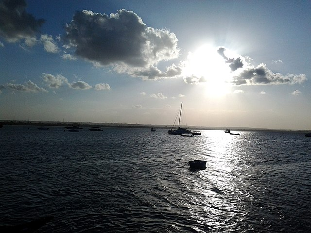

Save Our Oceans!
This is a project to show how our oceans are being exploited and ways we can save them.

Introduction: The World is In Trouble
At this current rate, 70% of the Earth will be gone. How? Overfishing is when fisherman fish so much that fish cannot be made fast enough, which depletes the fish population. According to Save Our Seas , "Overfishing occurs when fish and other marine species are caught faster than they can reproduce. It is the result of growing demand for seafood around the world, combined with poor management of fisheries and the development of new, more effective fishing techniques. If left unchecked, it will destroy the marine ecosystem and jeopardize the food security of more than a billion people for whom fish are a primary source of protein." This explains how overfishing works, and if overfishing is continued, the world could be doomed with the destruction of 70% of the Earth.
Case Study: The Bluefin Tuna Is Disappearing
This is a case study that shows the effect of what is happening right now because of overfishing. According to Save Our Seas, "2009, WWF (World Wildlife Foundation)predicted that without drastic measures, Atlantic bluefin will disappear by 2012. Unfortunately, attempts to implement such measures—most recently at the 2010 Convention on International Trade in Endangered Species of Wild Fauna and Flora (CITES)—have failed." This case study shows the effect of overfishing and how if we do not get fish sustainably, marine life is doomed. This is why saving the oceans are important.

Solutions: Ways to Save the Ocean
But do not fear! There are some ways to sustainably fish to help the environment survive. If you can find fish found in these ways or more, you will be helping the environment. According to Sunset.com, "Floating traps and weirs, which guide the fish into ever-smaller boxes, harm neither fish nor the environment." This shows one of the ways that we can sustainably fish, not hurting the environment that we have inhabited for 190 thousand years (I am talking about homo sapiens).